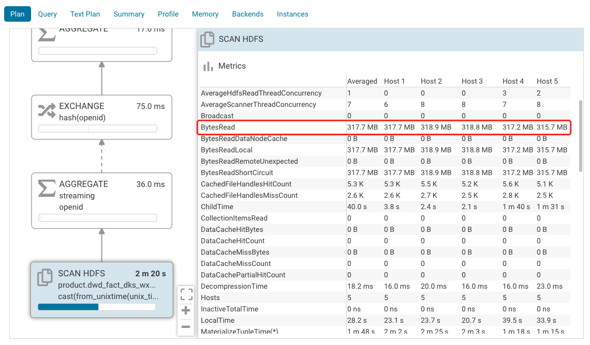

Metabase Dashboard 可以是动态的，常用的是指定时间范围筛选，查看这个时间段的指标。
简单示范
使用 SAMPLE DATASET 数据库。定义一个Question：在某一时间段，订单数是多少。使用以下 SQL模板。
select count(1) FROM ORDERS
WHERE 1=1
[[AND {{CREATED_AT}} ]]
在Variables侧栏选择如下：
- Variable type：Field Filter。（其他选项，Text/Number/Date 都是单值，没有范围。）
- Field to map to：选择对应的数据表字段，这里使用
ORDERS表的CREATED_AT字段。 - Filter widget type：Date Range。注意，只有日期类型（
date/timestamp）有这些选择。（其他选项，大同小异，都会生成对应SQL语句。）
在日期控件中选择时间范围，实际执行的SQL语句如下。
select count(1) FROM ORDERS
WHERE 1=1
AND CAST("PUBLIC"."ORDERS"."CREATED_AT" AS date) BETWEEN date '2020-06-03' AND date '2020-06-04'
打开浏览器开发者工具就能看到。
可以看到，生成了这个过滤条件：CAST("PUBLIC"."ORDERS"."CREATED_AT" AS date) BETWEEN date '2020-06-03' AND date '2020-06-04'替代了。
column CREATED_AT 被转为date类型。因为日期控件的日期精度只到年月日，没有时分秒，实际使用中确实也没必要时分秒。
不同的数据库，支持的数据类型是不同的，比如Impala就不支持date类型。Metabase 用如下语句达到相同效果（由各个数据库驱动负责实现），将timestamp类型的精度截断到年月日：
CAST(from_unixtime(unix_timestamp(from_timestamp(CAST(`table`.`column` AS timestamp), 'yyyy-MM-dd'), 'yyyy-MM-dd')) AS timestamp) BETWEEN to_timestamp('2020-05-25 00:00:00', 'yyyy-MM-dd HH:mm:ss') AND to_timestamp('2020-05-31 00:00:00', 'yyyy-MM-dd HH:mm:ss')
参考：
查询优化
分享下 Metabase 和 Impala 搭配使用场景下查询优化经验。
查询优化的关键，主要还是SQL语句是否能够用到索引和分区键，尽量少地读数据文件。
Impala 数据库以日期分区，ETL脚本每日都会为数据表新增一个分区。Impala 不支持以timestamp类型作为分区键，也不支持date类型，所以日期分区键的类型是string，是不得不接受的现实。
并建一个日期小表（如下），适应 Metabase 默认只有日期类型支持日期范围筛选的硬性要求。
Question定义从单表查询：
SELECT count(distinct openid)
FROM dwd_fact_dks_wx_subscribe_v3
WHERE 1=1
AND CAST(from_unixtime(unix_timestamp(from_timestamp(CAST(`dwd_fact_dks_wx_subscribe_v3`.`subscribetime` AS timestamp), 'yyyy-MM-dd'), 'yyyy-MM-dd')) AS timestamp) BETWEEN to_timestamp('2020-05-01 00:00:00', 'yyyy-MM-dd HH:mm:ss') AND to_timestamp('2020-05-16 00:00:00', 'yyyy-MM-dd HH:mm:ss')

换成多表关联查询：
SELECT count(distinct openid)
FROM dwd_fact_dks_wx_subscribe_v3
inner join dwd_dim_date_with_timestamp
on dwd_fact_dks_wx_subscribe_v3.dt = dwd_dim_date_with_timestamp.dt
WHERE 1=1
AND CAST(from_unixtime(unix_timestamp(from_timestamp(CAST(`dwd_dim_date_with_timestamp`.`date_timestamp` AS timestamp), 'yyyy-MM-dd'), 'yyyy-MM-dd')) AS timestamp) BETWEEN to_timestamp('2020-05-01 00:00:00', 'yyyy-MM-dd HH:mm:ss') AND to_timestamp('2020-05-16 00:00:00', 'yyyy-MM-dd HH:mm:ss')
因为用到分区键，Impala 少读不少文件，查询速度也快了很多。
所以关键是要定义一个日期小表，查询使用分区键是常识。这样一个日期小表，还能解决如下的问题：
一个Question涉及多个事实表查询的，每个表都有时间戳字段。定义两个Variable显得啰嗦，定义一个Variable就无法处理了（每个Variable对应一个table column）。这时候共同关联到日期小表，用日期小表进行日期筛选。
string类型也使用日期筛选控件？
dt字段是string类型。以下查询与上文多表关联查询效果是一样的，但是少了定义日期小表的工作。
SELECT count(distinct openid)
FROM dwd_fact_dks_wx_subscribe_v3
WHERE 1=1
AND CAST(from_unixtime(unix_timestamp(from_timestamp(CAST(`dwd_fact_dks_wx_subscribe_v3`.`dt` AS timestamp), 'yyyy-MM-dd'), 'yyyy-MM-dd')) AS timestamp) BETWEEN to_timestamp('2020-05-01 00:00:00', 'yyyy-MM-dd HH:mm:ss') AND to_timestamp('2020-05-16 00:00:00', 'yyyy-MM-dd HH:mm:ss')
所以，如何让string类型也使用日期筛选控件呢？翻了下文档，还真可以，Metabase 真的想的太周到了！
A field’s “special type” is used to determine how to display it, and can also give certain types of fields special functionality. For example, by marking fields in a table as Latitude and Longitude, you allow the table to be used to create pin and heat maps. Similarly, marking a field as a URL allows users to click on it and go to that URL. https://www.metabase.com/docs/latest/administration-guide/03-metadata-editing.html
管理员模式，将原是string类型的字段映射成Creation date类型。
Metabase 有三种数据类型：
- Database type：数据库中的类型。由数据库驱动设置Database type到Data type的映射关系。
- Data type：Clojure进程中的类型。
- Field type：有特殊业务含义的类型。
总结
Metabase 的设计想的很周到，文档也很齐全。因为少看了点文档，走了些弯路。
Last modified on 2020-06-05